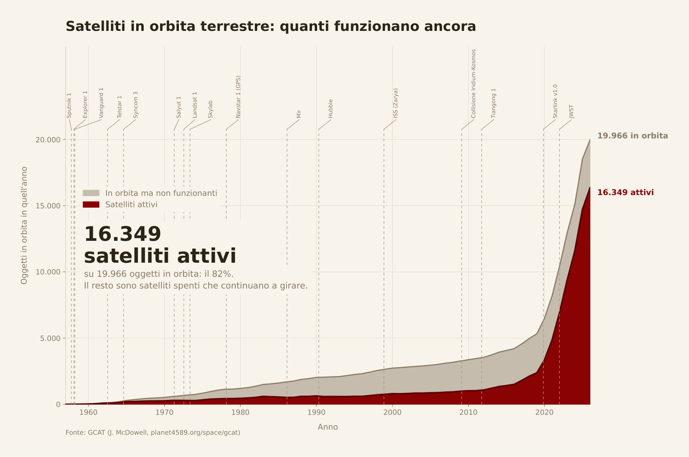
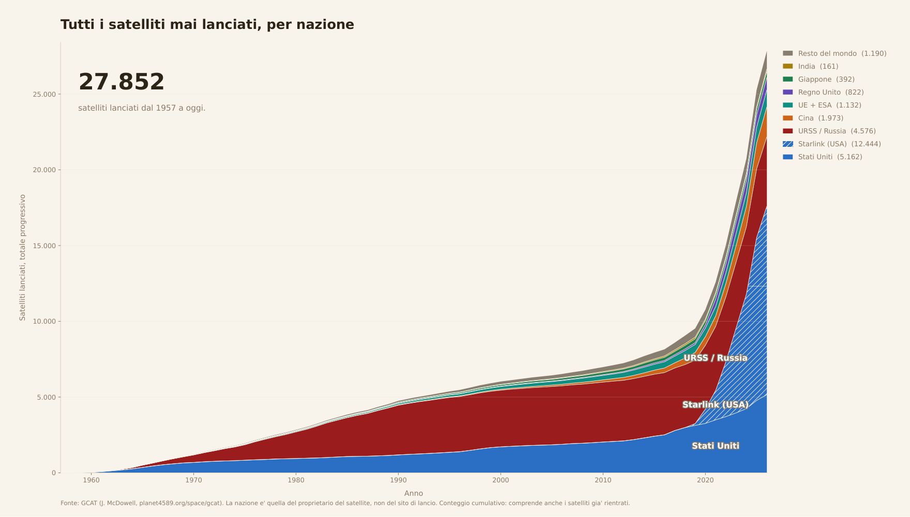
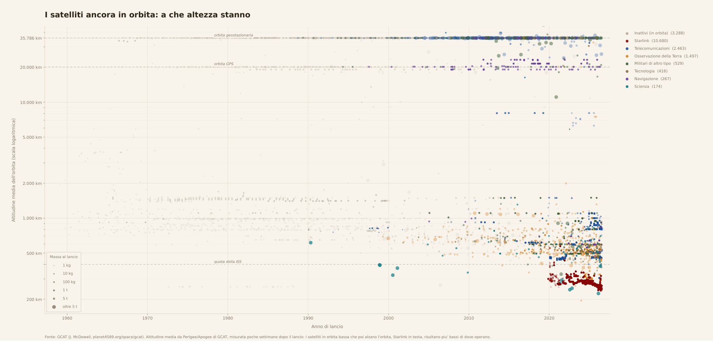

Si prospetta una giornata favorevole per lo Scorpione, soprattutto in ambito scientifico. Mercurio cessa la sua influenza negativa e il transito della Stazione Spaziale Internazionale a partire dal tardo pomeriggio promette di creare l'ambiente adatto ad una riflessione sull'uomo, sul cielo e sulle stelle. Viviamo in un'epoca in cui cogliere i segni dal cielo è sempre più difficile, me lo ha assicurato quel mago eremita che vive da secoli sulla sommità della torre di Galata, me l'ha confermato da poco una fattucchiera che si aggira nottetempo nel Sannio. Le stelle si muovono in modo strano, ballano, fuggono dalle loro posizioni, le fate dei boschi si affaticano ogni notte spostando e ripiantando le margherite, nel tentativo di mimare in terra le luci del cielo. Qualcuno nota che pare come se tutte le lucciole, scomparse da tempo dai nostri campi, fossero migrate nella lontana atmosfera. E tutto in pochi anni. In quanto apprendista stregone non ho potuto ignorare le lamentele delle creature dei boschi, in quanto scienziato devo onorare le prove.
Solo pochi anni fa, incappare con lo sguardo nella traiettoria di un satellite fioco era un evento raro, riservato agli osservatori più attenti dei cieli d'estate. Ora non è più così, magari vi sarà capitato di notarlo. In caso contrario alzate lo sguardo la prossima volta che sarete lontani dalle luci della città: quasi sicuramente entro pochi secondi coglierete un puntino piccolo ma luminoso quasi come una stella muoversi molto velocemente sopra le vostre teste.
Mi appellerò, al fine di portare prove concrete di quanto detto, agli archivi dell'erudito Jonathan Christopher McDowell, scienziato d'oltreoceano che da quasi quarant'anni compila il Jonathan's Space Report, il più vasto archivio pubblico al mondo sulla storia della cosiddetta "Era Spaziale". Dai dati di McDowell si comprende bene la rapidità della trasformazione del nostro cielo.

Dal lancio del primo Sputnik sono passati sessantanove anni, il primo passo verso la trasformazione dello spazio oltre atmosferico in un asset strategico vitale per il mondo moderno. Il Global Positioning System americano e il GLONASS russo, assieme all'intero corredo di satelliti spia, sono stati una variabile centrale negli equilibri della guerra fredda dello scorso secolo. Dal 1998 la Stazione Spaziale Internazionale solca i cieli trasportando astronauti che salutano la Terra, e continuerà a farlo almeno fino al 2030. Negli anni, anche la Cina, l'India, gli stati europei, assieme a molti altri paesi, anche in via di sviluppo, hanno cercato di proiettare la propria influenza nello spazio, piazzando satelliti strategici a tutte le orbite: dalle poche centinaia di km alla geostazionaria. All'inizio degli anni duemila, mentre io osservavo per la prima volta la volta celeste, il sogno spaziale iniziava ad apparire alla portata dei privati grazie alla messa a punto dei CubeSat, piccoli satelliti cubici prefabbricati (10 × 10 × 10 cm), su cui si poteva montare e lanciare in orbita il proprio progetto, o esperimento.
Insomma, questa grande mobilitazione delle agenzie spaziali, che portavano avanti la tecnologia incessantemente sin dagli anni Sessanta, raggiunse la soglia dei mille satelliti orbitanti attivi solo attorno al 2010. Ora sono oltre sedicimila.
L'impennata di lanci di satelliti è concentrata negli anni a partire dalla pandemia di Covid, ed è dovuta principalmente alla creazione della rete di satelliti Starlink della rinomata agenzia spaziale privata SpaceX. Dal 2019, in sette anni sono stati lanciati oltre dodicimilaquattrocento satelliti Starlink. Si osserva che nel solo 2020 SpaceX ha registrato 833 unità messe in orbita: più di un terzo di tutti i satelliti attivi alla fine del 2019. È suggestivo immaginare che qualcuno di noi abbia salutato il solito cielo all'inizio del lockdown, e lo abbia trovato diverso, una volta uscito.

L'inquinamento luminoso della volta celeste è la conseguenza più immediata della massiccia messa in orbita di alluminio e silicio. Per limitare il problema i costruttori di satelliti hanno studiato rivestimenti speciali antiriflesso, con cui ricoprire l'area del satellite rivolta verso il nostro pianeta, e hanno progettato l'orientamento dei pannelli solari in modo tale da evitare il riflesso diretto sulla Terra della luce solare. Sta di fatto che ogni due o tre settimane fra le notizie di Google o sulle pagine social di astrofili mi appare più o meno sempre la stessa notizia dal titolo del tipo: "Spettacolare transito trenino Starlink visibile stasera, occhi all'insù!". Le misure di precauzione proteggono sicuramente in parte dall'inquinamento luminoso dei satelliti, ma non sono decisamente efficaci nel nasconderli al nostro sguardo.
Chiaramente non tutti i satelliti inquinano il cielo allo stesso modo. Il file di McDowell fornisce anche una stima della massa e dell'altitudine dei singoli satelliti, a poche settimane dal lancio. Per alcuni satelliti in orbita bassa l'altitudine può essere sottostimata, dato che certi lanci sono progettati per raggiungere la quota target solo dopo diverse settimane dalla messa in orbita, ma la stima è comunque qualitativamente indicativa. Si nota che le unità della rete Starlink operano fra le orbite più basse, rispetto agli altri, nell'ordine delle poche centinaia di chilometri di altitudine. Altri tipi di satelliti, come quelli per le telecomunicazioni, si trovano nell'orbita geostazionaria, a circa 36.000 km dalla superficie terrestre, e inoltre rispetto ad un osservatore a terra sono fermi, dunque non rovinano le foto a lunga esposizione.

Ecco l'inizio dell'era spaziale di McDowell, certamente un checkpoint entusiasmante, ma per cui non siamo stati consultati. Oh, umano progresso! Altri hanno preso questa decisione per noi, noi guardiamo il cielo e non è più lo stesso: di ieri, dei romani, dei greci, degli egizi. È suggestivo. Mi chiedo però quale sarà il nostro ruolo in questo nuovo gioco: ora che il progresso spaziale non è più portato avanti dagli stati, per farsi belli, ma da aziende private, possiamo davvero ancora considerare i traguardi raggiunti come conquiste dell'umanità intera?
Possiamo concludere che quell'animula vagula blandula che vedi solcare timidamente quella porzione di cielo notturno, mentre conti le stelle fisse, è forse una magia un po' complessa, probabilmente prodotta da quegli stregoni di SpaceX. Sugli effettivi fini benigni o malvagi di questa nascente egemonia non sono in grado di esprimermi: in un libro fantasy sarebbe forse opera di un antagonista, nel mondo vero... chissà. Consulterei le stelle, ma l'oroscopo è confuso. Leggere il futuro è divenuto più complesso.